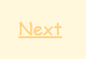
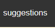

User Manual
First, choose the language in which we want to work.

Once the language is selected, we will choose what you want to see.
This will appear in the user manual that you are reading.
In desserts this will appear and you just have to click on the reseta you want.
You also have suggestions that appear in certain dessert recipes and are represented by these buttons. These are recipe suggestions that you can make with desserts.
